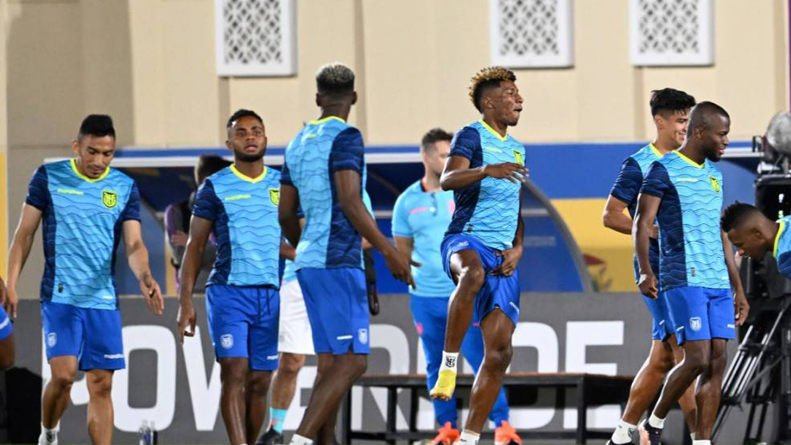

FIFA World Cup 2022: Explained-why last round of matches have simultaneous kick-off
If you are been following the FIFA World Cup in Qatar closely you will of course know that
starting Tuesday,
November 29, there won't be any 3:30pm kick-off. Instead, the first two games of the
day, which
will
both feature teams from the same group, will kick-off at 8:30 PM and the next two will start
at
12:30 AM and will
again feature team from the same group.
According to the protocol that FIFA follows, the last two games of each group (3rd match for all
4 teams in
a group), or in other words the last round of matches across all 8 groups kick-off in this
fashion. But
have you ever wondered why this happens?
For the answer to that question we need to travel all the way back to the 1978 edition of
the
World Cup in
Spain and to a match between West Germany and Austria, which picked up the nickname of
'The disgrace
of Gijon'.
The two teams faced each other at the El Molinon stadium in Gijon, Spain on June 25, 1982. It
was the
last match of Group 2. The other two teams in the group - Algeria and Chile had played their
last
match the day before.Algeria were playing some very good football in what was their World Cup
debut. They had already
stunned the West Germans in their opening game.
And then after a loss to Austria, pulled off another win
against Chile.
The Algerians were in second position,behind Austria, with 4 points. So as things stood before
the West
Germany vs Austria match - an Austrian win or even a draw would ensure Algeria's progress to the
next round.
Meanwhile, a West Germany win by 3 goals or more would see Algeria qualify along with the
Germans. Also,
importantly - the third scenario was a win by either one or two goals for West Germany would
see the
Germans and the Austrians go through at the expense of Algeria on goal difference.

Ecuador players during a training session at Mesaimeer SC training facilities in Doha.
And that's exactly the script that the two teams played out on the pitch.
In what was one of the most shocking sights on a football pitch in the history of the World Cup,
the Germans and the Austrians colluded to play the game in a way that Germany walked away with a
1-0 win.
The Germans scored the first goal inthe 12th minute via then centre-forward and current coach of
Hamburger SV,
Horst Hrubesch, nicknamed 'The Header Beast' for his skills in heading
the ball.But after this goal, both teams began to aimlessly pass the ball around in their own
halves.
No attacking
plays as such were witnessed.
Often the ball was kicked back to the goal-keeper.Barring
a couple of players
who showed some intent, the match steadily deteriorated into quite the farce. The game ended
at 1-0 to the
Germans which meant that West Germany,Austria and Algeria all finished on 4 points and the
Germans and the
Austrians went through to the next round on goal difference. West Germany had a GD of +3,
Austria of +2 and
Algeria had a GD of 0.
The commentators were disgusted by what they witnessed, so were the fans in the stadium. Local
newspaper El
Comeercio ran the match report in its crime section. According to some reports, Austria's
national
broadcasters told viewers in Austria to switch off their TV sets.
It appeared to be an on the spot decision by the teams to play in this fashion and not really
pre-match
fixing, but the match went down in the history books as one of the most infamous games of
football ever
played and is still remembered as 'The disgrace of Gijon'.The Algerian Federation
of course protested against this, but since no
rules were broken, FIFA
or any other
body couldn't punish anybody.What FIFA did do though after this was revise its World Cup match
schedule such that the final
matches of
all groups from the next edition in 1986 would have simultaneous kick-offs.This was done to
maintain the
sanctity of the games and the tournament as a whole, so that no team/teams can plan results in
advance,
based on previous results. It helps to maintain a level playing field for all team gets the
short end of the
stick. In the 1982 edition, West Germany made its way to the final, where they lost to eventual
champions, Italy. Austria meanwhile were knocked out in the second round (played at that
time before the knockouts
which began with the semi-finals), after a 0-1 loss to France and a 2-2 draw with Northern Ireland.The
practice of simultaneous kick-offs for the last two games of a group serves another purpose
- that of
ensuring that of ensuring that no match-fixing of any kind, propelled by by bets on a
team/teams, can be
engineered.